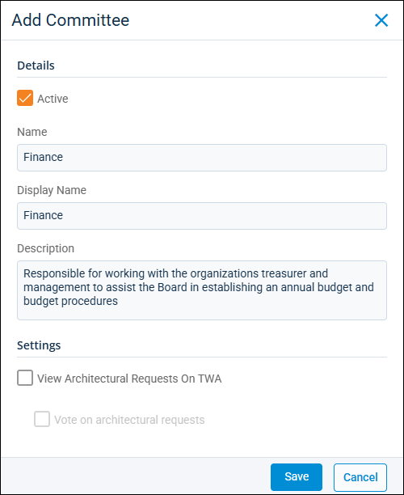

Source: https://rmxhelp.rentmanager.com/Topics/Express/Action/Associations-Committees-Add.htm
Add an Association Committee
If your property is an association such as a Homeowners Association (HOA), you may have committees of people related to various aspects of the association (e.g., a social committee). If you have a committee that reviews requests for architectural changes to a home such as planting trees, adding gardens, or painting, committee members may view and vote on tenant requests in the Tenant Web Access (TWA) portal.
The Committees page allows you to add new committees. Once you've created your committees, you can assign homeowners to a committee on the property's Committee Members pop-up.
Related Privileges
| Group | Privilege | Column |
|---|---|---|
| Associations | Manage Committees | Enabled |
For more information, refer to Control User Access.
To add an association committee to a property, do the following:
-
Go to
 arrow_forward
arrow_forward  Administration, then go to .
Administration, then go to .
The Committees page displays. -
Click
 Add Committee.
Add Committee.
-
Enter the following information:
Field Description Active
Determines whether or not you are able to assign members to the committee on the Association page. By default, this box is checked.
Name
The name of the committee that displays in Rent Manager.
Display Name
The name of the committee that displays in Tenant Web Access (TWA).
Description
A note to explain the purpose of the committee.
View Architectural Request on TWA
If checked, allows members of this committee to be able to view architectural requests in TWA.
Vote on architectural requests
If checked, allows members of this committee to be able to vote on architectural requests in TWA.
-
Click Save to accept your changes and close the pop-up.
The new committee displays on the Committees page.